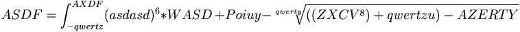
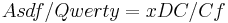
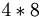

ASDF
 De: La Frikipedia, la enciclopedia extremadamente seria.
De: La Frikipedia, la enciclopedia extremadamente seria.
«ASDF...»
~ Tú Leyendo el título
«ASDF...»
~ Tú Leyendo las teclas (¿no es apasionante?)
Concepto asdfico abstracto de altísimo nivel. Su uso es habitual, aunque no único, en:
- Aprendizaje de mecanografía avanzada.
- Control y mandos principales en un emulador de videojuegos(aveces se requieren 2 o más teclas pero asdf nunca faltan.
- Pruebas de impresión, envío o muestra de texto.
- Relleno de formularios contenidos en sitios web estúpidos.
- Relleno de e-mails cuya única función es transferir archivos.
- Relleno de campos en bases de datos obligatorios pero comprensiblemente irrelevantes.
- Títulos y nombres provisionales de documentos y archivos.
- Contraseña por default de bastantes sistemas informáticos.
- Nombres de muchos personajes de juegos online.
- Nicks temporales cuándo alguien roba la contraseña del original.
- Básicamente lo que escribes dándole una hostia al teclado cuando estás intentando poner una gilipollez en la conversación del Mésenller de un amigo y el te lo impide
- Se utiliza como primer test para valorar el correcto funcionamiento del ordenador. Permite comprobar que no está colgado y que TODOS los dispositivos I/O están operativos.
- Conjunto vacío de letras que se teclean a menudo cuando un@ se queda dormid@ encima del teclado. Después de arduas investigaciones, se ha descubierto que en realidad es una conjuro satánico para invocar a David Bisbal. No se ha comprobado, solo investigado. Trazad una estrella de ocho puntas con un permanente color 5fd78e(de la gamma Pantoné) y escribid "asdf" diez veces en un papel del mismo color que el permanente. Ya diréis si se cumple el rito satánico y se os aparece Bisbal... a mí me da miedo probarlo...
- Lo que escribes repetidamente para trabarle el mésenller a un amigo.
- El usuario que siempre está escogido en portales porno.
- Lo que has puesto en el buscador porque estas aburrido y no sabes que hacer y la unica gilipollez que se te ocurre es : ¿Habrá un artículo de esto?

Historia oculta
Asdf convertido a circuncisión!
El apocalipsis ha iniciado!!!!
Ejemplos
(En un formulario para una suscripción)
Nombre: Joselito
E-Mail: tumadredesnuda@ledoyhastamañana.com
Dirección:asdf
(En una conversación de MSN)
Juan dice:
Bo, mañana hay que ir al colegio?
José dice:
o
José dice:
n*
José dice:
asdflkwjerghlkwt
José dice:
No*
¿Sabías que...
- ... Asdf es el hermano tonto de ADSL?
- ... Asdf es libre?
- ... Asdf es el nombre del pokémon número 1234?
- ... Asdf suena así: [1] ?
- ... Que existe una sociedad que se denomina Asociación de Simpáticos Dispuestos a Fastidiarte?
- ... y otra que se llama Algunos Sucios que Dominan las F.A.R.C. (ya sabrá dios que significara esto ultimo)
- ... Zxcv son sus bis-nietos, y compiten entre si para ser elegidos cuando se rellenan formularios de prueba?
- ... ÑLKJ es su primo?
- ... UIOP es su suegro?
- ... a Asdf le gusta Jkl?
- ... 123 es su enemigo letal?
- ... no tiene vida?
- ... Asdf es una palabra de cuatro letras?
- ... Asdf suma 8 puntos en el scrabble?
- ... Asdf es cuatro letras de una palara?
- ... Es lo primero que aprendes en mecanografía?
- ... Fdsa es Asdf escrito al revés?
- ... as + df es igual a asdf?
- ... entre qwer y zxcv está asdf?
- ... puedes ver los uno de cada asdf's salvajes vagando entre si?
- ... asdf si lo lees asdef suena a nombre ruso, o alemán? es curioso?
- ... ?
- ... asdf es la sigla de Asociación Solo De Feos?
- ... zxcv está abajo de asdf?
- ... Asdf engaña a Poiuy?
- ... cada vez que escribes Asdf estás dandole 5 € a Bill Puertas?
- ... esa es otra forma de dominar el mundo?
- ... f se unió a asd en 2005?
- ... asdf ocupa  bytes?
- ... asdf es un string?
- ... asdf es la clave para entender a Chiquito de la Calzada
- ... アナエガ es Asdf en japonés?
- ... asdf es la solución a todos los sistemas de ecuaciones en matrices resueltas por el Método de Gauss?
- ... asdf es la respuesta del examen de personalidad?
- ...ΔΣΦΨ son asdf pero transformados en emo para llamar la atención?
- ...asdf es en realidad el nick de JFK?
- ...mnbv es el enemigo mortal de asdf porque nadie lo usa?
- ...ASDF es el amante de WASD?
- ...los que inventaron el adsl tuvieron en cuenta el adsf?
- ...ASDF esta al lado de GHJK?
- ...ASDF es primo-hermano de Qweqwe?
- ...ASDF le enseño a usar el condon a qweqwe?
- ...Te observamos y sabemos que haz vito a tu teclado durante estos "Sabias Que?" para ver si realmente encajan estas complejas formulas con tu teclado?
- ... IP anónima uso alguna vez en su vida el asdf?
- ...SI estas lo suficientemente aburrido también verás los enlaces externos de las paginas oficiales de ASDF?
- ...Que HSBC tiene una alianza con ASDF para destruir a BBVA?
- ...Que como sigas leyendo asdf te va a matar, pero de aburrimiento?
- ...ASDF significa Ahora sabes De...Fecar?
- ...hay una película sobre asdf?
Enlaces de interés
Autor(es):
- Krusher
- Nexo
- Fordus
- Er Makina
- Mithran
- Xaver404
- Haakjvork
- Zarovich
- MURO DE AGUAS
- Chrisnavi
Frikipedia 2005-2016, Licencia
GFDL 1.2 - Extraído por FrikiLeaks